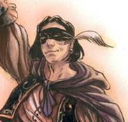

Forums galactiques > Assemblée Galactique : diplomatie officielle > Déposez vos plaintes ici
Pages : 1 2 ... 109 110 111 ... 201 202
| delius Respect diplomatique : 29  13/01 ETU 23:42 | Score : 2 Détails Certes vous avez raison mais il y a un point ou je suis d'accordavec [*] Oblivion [*] c'est que je vous trouve un peu prétencieux.
| ||
| KoKO Respect diplomatique : 200  13/01 ETU 23:42 | Score : 2 Détails citation :
sois ces amis l'aident sois il décède Nous trouvons que sa rime super bien ,ce que vous venait de lire là le masque ,vous avez peut être en vous un talent cacher. | ||
| Felinia's return Respect diplomatique : 354  13/01 ETU 23:43 | Score : 0 Détails ok, mais, le problème est surtout que Oblivion n'est pas solvable. Il ne peut rembourser Le Masque et espère qu'on va les laisser se battre tout les deux sans réagir. Mais, on est une coa soudée et on agit comme telle. Si Oblivion touche au Masque, il touche à la coalition.
C'est également le même avertissement pour Wizlo qui a pris une planète au Masque, ce soir, dans le même système qu'Oblivion. Edit : le Masque n'est pas prétencieux, il est remonté de s'être fait attaqué et menacé sans raison. En plus, si on peut mettre en application ce qu'on dit, ce n'est plus de la prétention, mais du réalisme. Il n'est donc pas prétentieux. | ||
| delius Respect diplomatique : 29 13/01 ETU 23:48 | Score : 0 Détails je ne le connais pas mais c'est ecrit que j'ai pu lirs dans la salle de plainte disait la meme chose tu paye ou tu décède apres il peu etre tres sympathique et je nen doute pas mais c'est seulement ca que j'ai constater a premier
| ||
| -Le Masque- Respect diplomatique : 39  13/01 ETU 23:52 | Score : 0 Détails "Je ne suis pas prétentieux, seulement certain de mes capacités vis à vis de quelqu'un de la trempe de Oblivion.
Nos experts nous ont informé de la puissance de feu et du contenu des réserves de ce commandant, et il n'a malheureusement aucune chance." | ||
| Felinia's return Respect diplomatique : 354 13/01 ETU 23:53 | Score : 0 Détails De toute façon, qu'est-ce que ça peut faire ? Il a été attaqué, il veut réparation et vous allez lui faire un délit de sale gueule alors qu'il est la victime ? Vous êtes vraiment un sacré numéro vous aussi.
Je commence à en avoir assez des commandants dans votre genre, alors videz les lieux si vous n'avez rien de plus constructif à dire. Sinon, ce sont 1 milliards de cla qui vous botteront les fesses hors d'ici. | ||
| [*] Oblivion [*] Respect diplomatique : 10  14/01 ETU 07:36 | Score : 0 Détails 1 MA de cla, bientôt tous détruit....
Je suis triste de devoir me retrouver face à vous, car je vous trouvais plutot sympatique. Enfin bon, le masque est un lache, il n'ose pas se battre seul. Mais ca y en a partout des "flans" (excusez^^) | ||
| Cesco Imperator Respect diplomatique : 3122  14/01 ETU 09:27  | Score : 0 Détails Oblivion...il y a une chose que je ne comprends pas.
Et nos conversations privées ne m'éclairent pas à ce sujet. Vous attaquez bha un système par erreur. Vous avez infligé des pertes collosales au Masque, qui a aussi mal réagi que n'importe qui à sa place. Et dans la foulée, des amis à vous l'attaquent. Qui ici est responsable ? vous, ou lui ? Soyons clair, trouvez une solution, afin d'arrêter ça...nous nous engagerons dérrière lui, parce qu'il est la victime, et vous l'agresseur, si nous le devons. Nous le ferons, parce que vous l'attaquez avec des amis, alors qu'il est seul. Maintenant, pensez ce que vous voulez de Dernier Acte, dont je vous ai donné les membres par MP. Nous ne sommes pas assez puissants pour vous , qu'il vous semble facile de nous battre ? vous allez avoir des surprises, je vous assure. Nous ne sommes pas aussi nombreux que vos amis ? regarder la politique de la RW, qui ne s'engage pas totalement, mais en termes d'individualités, et vu que là, c'est vous le reponsable, je doute que vous drainiez tant de monde... Vous comptez peut-être trouver des soutiens extérieurs ? chez certains de nos ennemis ? alors sachez aussi que depuis le temps que Sara, Aritippe, Félinia ou moi arpentons cette Assemblée..nous avons aussi tissé un réseau d'amitiés fortes... Votre conduite, Oblivion, ne peut rien amener de bien. Rien. Vous avez fait une erreur en tirant ces bhas au hasard, assumez, remboursez tout le monde, trouvez une solution pour le masque, et tout cela s'arrêtera. L'escalade ne peut être profitable à personne. Personne. | ||
| Felinia's return Respect diplomatique : 354 14/01 ETU 09:48 | Score : 0 Détails Oblivion, je suis d'accord avec Cesco.
Maintenant croyez-moi, nous provoquer ne sert à rien. C'est pas ça qui va nous inquiéter et cela va peut-être simplement nous faire penser que vous êtes vraiment pitoyable. Au lieu de balancer de vaines menaces, trouvez une solution pour le Masque. Edit : Et moi je ne t'ai jamais trouvé Sympathique. Surtout quand tu as voulu embaucher l'AMG pour détruire Trantor qui est 10 fois moins puissants que toi. Tu avais peur ? | ||
| général grievous Respect diplomatique : 154  14/01 ETU 09:59 | Score : 0 Détails La commandante [*] Oblivion [*] ce rend bien conte de l'erreur quelle a commise en bombardent a la ha( par erreur ou non)
Mais si elle ne peut rembourser les pertes que j'ai entendue assez importante. Que faire? Je ne pense pas que de simple excuse vous suffise, alors que voulez vous de sa part?? | ||
| Felinia's return Respect diplomatique : 354 14/01 ETU 10:10 | Score : 2 Détails Arrêter ses provocations déjà.
Ensuite, ce qui ne nous plaît pas, c'est qu'elle a déclaré qu'elle nous remboursait mais qu'elle réglerait ça au combat avec Le Masque mano à mano. Elle ne veut même pas engagé les négociations avec lui. Pourquoi ? Hier, j'ai demandé une demande de remboursement. Quelques heures après (environ 3h) je reçoit un message qui me dit "dans trois heures". Elle ne dit pas si elle accepte ou non et ne réponds pas à mon message demandant une précision. Plus de trois heures après, elle me dit qu'elle accepte. Et pour toute la coa, ça a été long. Sachant qu'elle est alliantiste, j'en déduis qu'elle a lancé ses méca et a choisit de rembourser en voyant notre puissance (je connais la sienne, donc je me doute de ce qu'elle pense). Le Masque lui a beaucoup de pertes, mais il est aussi prenable militairement parlant. Donc elle se dit, je rembourse les autres et je leur propose de régler ça mano à mano. Mais, pas de chance on est une coalition solidaire. Je pense qu'il y a d'autres arrangements que les leems. C'est à eux deux d'ouvrir les négociations. | ||
| [*] Oblivion [*] Respect diplomatique : 10 14/01 ETU 11:25 | Score : 0 Détails La seule personne ayant été espionner est le masque, quand à vous felinia et compagnie je vous connais depuis très longtemps.... Et je sais que je cour au suicide mais que faire d'autre ? Si j'avais les moyens je rembourerais, mais ce n'est pas le cas... Sinon, je pourrais m'engager à protéger et aider le masque à vie.... non ?
| ||
| Rosa L. Respect diplomatique : 1595  14/01 ETU 11:57 | Score : 0 Détails Alors comme ça, chère Lana, vous attaquez un membre de l'AMG.
Et bien, je crois que vous aimez les risques..... | ||
| Felinia's return Respect diplomatique : 354 14/01 ETU 12:38 | Score : 0 Détails Et un membre de l'Ordre de la Lune Noire ?
(tu m'as devancé pour l'AMG ^^) J'aimerais que tous ceux qui ont un problème avec la commandante Oblivion se fasse connaître. Parlez-en autour de vous pour que les jeunes qui ne viennent pas ici, soit également au courant. Ils sont la principale cible de cette commandante. | ||
| razorkilll Respect diplomatique : -31  14/01 ETU 12:51 | Score : 0 Détails moi j'ais recut une bha de la part de oblivion et maitre anubis ma gentillement dedomage
| ||
| [*] Oblivion [*] Respect diplomatique : 10 14/01 ETU 13:30 | Score : 0 Détails Je n'ai jamais attaqué l'AMG bien au contraire.
Felinia's, vous avez le don pour.....grrr..... Bon, trouvons une idée de négociation.... | ||
| Felinia's return Respect diplomatique : 354 14/01 ETU 13:32 | Score : 1 Détails Pourtant, Rosa dit la même chose.
Insinuez-vous que nous sommes des menteuses ? | ||
| [*] Oblivion [*] Respect diplomatique : 10 14/01 ETU 13:34 | Score : 0 Détails Citez le cdt, et je vous répondrais plus explicitement...
| ||
| Felinia's return Respect diplomatique : 354 14/01 ETU 13:36 | Score : 0 Détails Il viendra s'expliquer de lui-même dès son retour de mission. Il est vrai que vous ne savez peut-être pas qu'il est à l'AMG. Il s'agit d'un jeune commandant.
| ||
| Rosa L. Respect diplomatique : 1595 14/01 ETU 13:36 | Score : 0 Détails Lana,
J'admire votre acharnement mais je sais que vous avez attaqué le commandant Althamir......un membre de l'AMG. Alors, rendez lui ses quatres planètes avant que je vienne vous botter les fesses. Bien à vous, Rosa |
Pages : 1 2 ... 109 110 111 ... 201 202
Forums galactiques > Assemblée Galactique : diplomatie officielle > Déposez vos plaintes ici